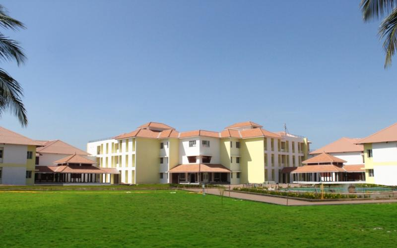
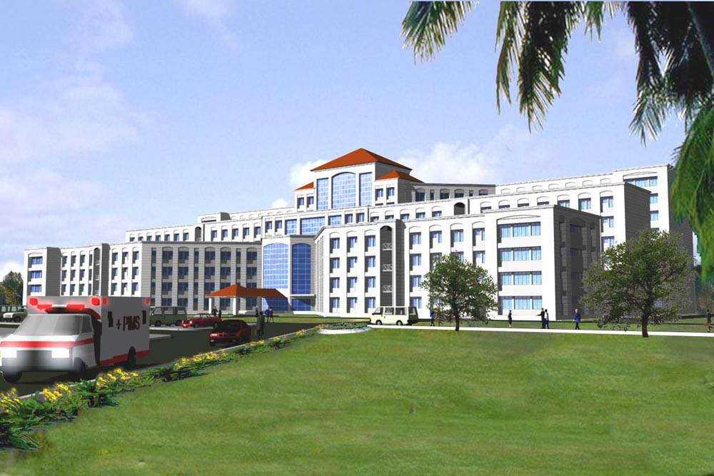

| AHALIA SCHOOL OF ENGINEERING & TECHNOLOGY |
Login Register |
||||||||
|---|---|---|---|---|---|---|---|---|---|
| Home | About Us | Careers | Departments | Contact Us | |||||
| "Ahalia School of Engineering & Technology (ASET), Palakkad | The vision of Ahalia Group |  | |||||||
"Ahalia emphasizes on high quality education, including a comprehensive general education that imparts broad knowledge, skills and values. It is our earnest desire to assure continued strength of our faculty with the realization that the quality of instruction is directly related to the commitment of the faculty for excellence in education |
The History Ahalia Group was established in Abu Dhabi as an ordinary G.P. clinic in the year 1984 with an aim to provide quality health care. Ahalia now has pride of place as one of the best hospitals in the region. Even two decades ago, staying within the limits of available resources, the clinic has managed to carve a special place for itself on account of immaculate service. A small GP clinic in 1984 has now grown to become the AHALIA GROUP -a private organization with many medical centres,16 pharmacies and trading centres functioning under it. |
 | |||||||
| ABOUT AHALIA|REGISTERED|LINK FEEDBACK|LINK MAP| SITE-FEEDBACK|SITE-MAP| | |||||||||